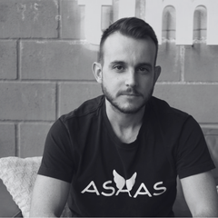
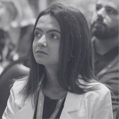

Depoimentos
Confiança se constrói trabalhando junto
Os resultados contam parte da história. Quem participou dos projetos mostra como ela aconteceu — relatos de líderes, Product Managers, GPMs, Marketing, Comercial e parceiros.
O que aparece nos feedbacks
Padrões que se repetem
Relatos de quem viveu essa jornada comigo
Lideranças, pares e stakeholders
O Hugo é um profissional diferenciado. Tem o cuidado de entender a fundo o momento de cada produto antes de partir para a execução. É extremamente detalhista e não abre mão da qualidade. Ao interagir com ele, você encontrará alguém crítico, questionador e comprometido com as melhores soluções. Recomendo fortemente o seu trabalho.

Guilherme PanizzonHead of Product · AsaasTive a oportunidade de conviver com um profissional extremamente hands-on, pró-ativo, com visão crítica apurada e grande capacidade de resolver problemas de forma eficaz. Uma peça-chave para o time, mantendo um ótimo relacionamento com outras áreas. Seria um prazer trabalhar com ele novamente.

Rafaele MedeirosProduct Marketing Lead · AsaasSua habilidade em trazer estratégia, ordem e eficiência para um departamento que antes nem existia foi fundamental. Sua abordagem estratégica e metódica transformou a forma como operamos, resultando em processos mais eficientes e clareza muito maior impactando os usuários.
Como PMM, ele foi uma peça-chave na conexão entre produto e marketing, atuando de forma estratégica e com escuta ativa em cada etapa. Sempre proativo, se antecipava aos lançamentos. Profissionais com essa visão integrada e habilidade de execução são realmente diferenciados.
FS
Fernando SenneGPM Pix · AsaasUm dos profissionais mais completos com quem já colaborei. Extremamente organizado, comprometido e com domínio sólido das disciplinas de Product Marketing. É alguém que escuta, soma e contribui de forma genuína para o crescimento do time e dos produtos.
HR
Hernane RenaultCoordenador Corporativo · SabinO Hugo é um profissional dedicado, comprometido e que leva a sério tudo o que faz, sem perder a leveza e a energia para concluir os projetos. Sabe ser crítico e questiona o status quo quando necessário, traz ideias pertinentes e inova na medida certa.
RM
Rafael MartinsPMM · AsaasUm dos melhores profissionais de Product Marketing com quem já trabalhei. Tem uma visão sistêmica de todo o processo de desenvolvimento de produtos. Criativo, atencioso aos detalhes e sempre baseado em dados. Aprendi muitos conceitos de PMM com ele.
EP
Elaine Patricia da CostaPM Cash-in · AsaasSeu profundo conhecimento do negócio, aliado à escuta ativa e pensamento crítico, contribui para a construção de soluções relevantes e bem direcionadas. Ele entende de fato as dores dos clientes e o contexto dos produtos — sempre fundamentado em dados.
AB
Adrian BrignoliPM Antecipações · AsaasIndo além das expectativas, buscava conhecer a fundo o nosso produto, me ajudando de forma estratégica nas entregas. Organizado e cuidadoso, garantia conteúdo de qualidade no tempo necessário. Era uma peça-chave no Asaas.
TN
Thais NakasatoPM Pagamentos · AsaasContribuiu de forma estratégica com insights relevantes e provocações inteligentes, sempre com base no conhecimento profundo que tem do negócio e dos clientes. Conectou a visão de mercado às necessidades reais dos usuários.
DR
Diego RibeiroPM Integrações · AsaasA interação com o Hugo no papel de Product Marketing é valiosa. Tem um perfil questionador e, por conhecer muito o negócio e os clientes, aporta ideias construtivas nos rituais de concepção de produto. Os materiais de GTM são sempre embasados em dados.
JC
Jéssica Chastel de LizPM Cartões · AsaasHugo é um excelente profissional e uma ótima pessoa! Suas entregas são de qualidade e se preocupa em alinhar todos os envolvidos. Trabalha com transparência e sabe argumentar, o que gera alta confiança. A resiliência é uma das suas maiores características.
RT
Rafaela TulioCoordenadora de Vendas · AsaasTrabalhar com o Hugo foi muito importante para desenvolvermos processos e fluxos de trabalho entre nossas áreas. Sempre muito disposto a ajudar e resolver problemas — um profissional proativo e muito comunicativo.
NM
Nayara MachadoPsicóloga Organizacional · SabinConsidero uma pessoa fantástica, desde seu olhar crítico para análises até o planejamento estratégico. Sempre disposto a escutar, propor ideias e soluções de forma ágil e descomplicada, se destacando pelo sentimento de dono e liderança.
KP
Kerolin PscheidtLíder em CRM · AsaasO Hugo é um profissional criativo, muito organizado, inteligente e dedicado, que sempre buscava trazer campanhas e incentivar a utilização do produto pelo usuário. Trazia ótimas contribuições com o posicionamento do produto no mercado.
JE
Joice Egeas GarciaAnalista de Marketing · SabinHugo é um profissional de excelência. Obstinado, não se limita às suas entregas, mas se importa com o ecossistema como um todo. Desenvolve projetos únicos e de grande valia, interage e une times em prol da construção de entregas de valor.
PM
Pâmela MaiaPM Crédito · AsaasNo Asaas pude ver a área nascer por meio de iniciativas geradas por ele. Processos bem estruturados, com o envolvimento das pessoas certas, para melhor agilidade e resultado. Um dos melhores profissionais de Product Marketing que já trabalhei.
VM
Victória MarquesEspecialista em SEO · AsaasO Hugo é um profissional que todo mundo quer trabalhar. É dedicado, curioso, detalhista. Atento aos escopos, deadlines e principalmente às métricas. É o cara que, se é pra fazer acontecer, ele vai lá e faz!
LV
Lygia Veny CasasPM Growth · AsaasAo longo da minha carreira, tive a oportunidade de trabalhar com pessoas incríveis. Esses relatos não só reforçam resultados, como lembram que o impacto real vai além das entregas — está na escuta, na troca, no respeito e na forma como colaboramos.
Contato
Vamos conversar sobre como posso gerar resultados para o seu produto?
Estou sempre aberto a boas conversas ou aquele café virtual. Será um prazer falar com você!